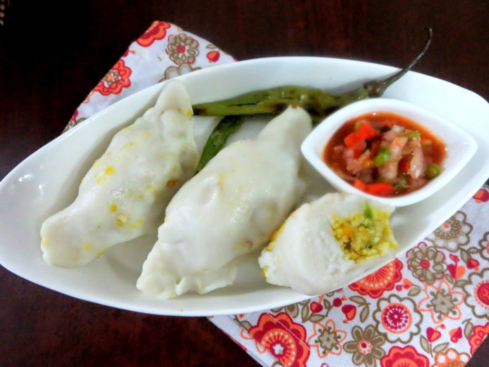
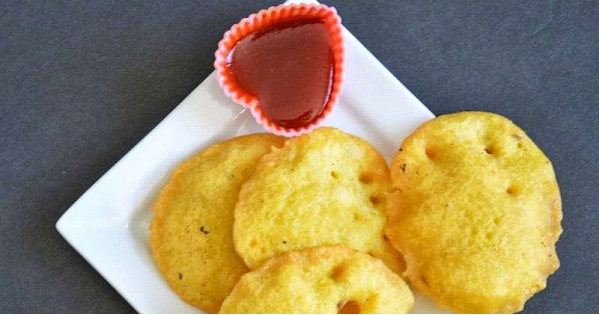
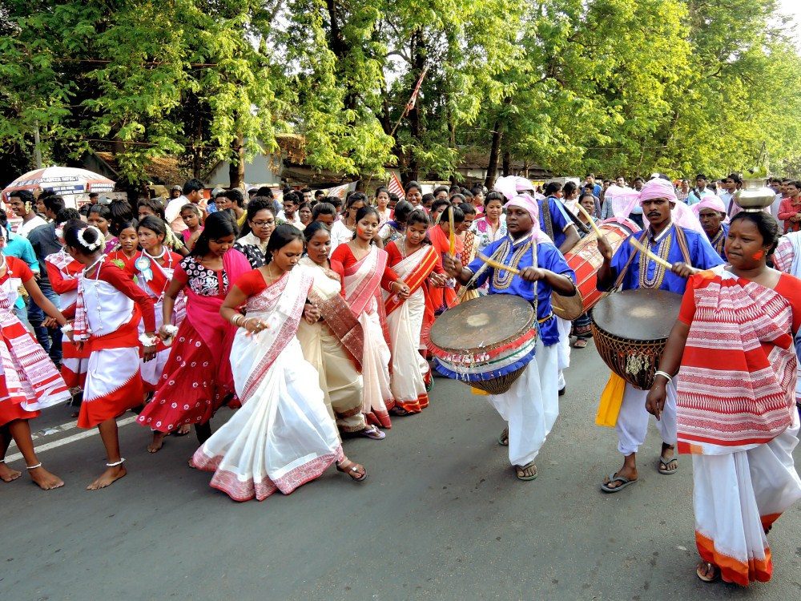

Eat and Out
Daal-Pitha

Daal Pitha
Dal pithas are stuffed with a protein-rich and spicy filling. Covered in rice these pithas are served with tomato chutney that gives it the perfect tangy-subtle flavour.
Dhuska

Dhuska
A smooth mixture of rice, dal and sometime mashed potatoes given a deep fry is a delicious snack. Dhuska gives the best crunchy moments when dipped in green chutney!
Culture and Festival
Sarhul

Sarhul
Jharkhand is a land of tribes. Different tribes are united by festivals and customs. Sarhul is an important festival of Munda, Oraon, Ho, and many other tribes. Sarhul literally means "worship of sal". It's celebrated every year at the start of spring when the trees blossoms and new growth begins. The tradition is as old as 2000 years, from then to today, the tribals pray to the village God who protects the tribe. The Saal flowers are used for the worship of the deity during Sarhul. Sarhul signifies new beginnings, joy and togetherness. The worship of Sal tree symbolizes the worshipping of Mother Nature. All the prayers and offering are believed to go to Mother Nature that resides in tree. On the day of the festival, homes are decorated, a lot of delicious food is made, women wear white saree with red borders and perform Sarhul dance to mark the advent of New Year.